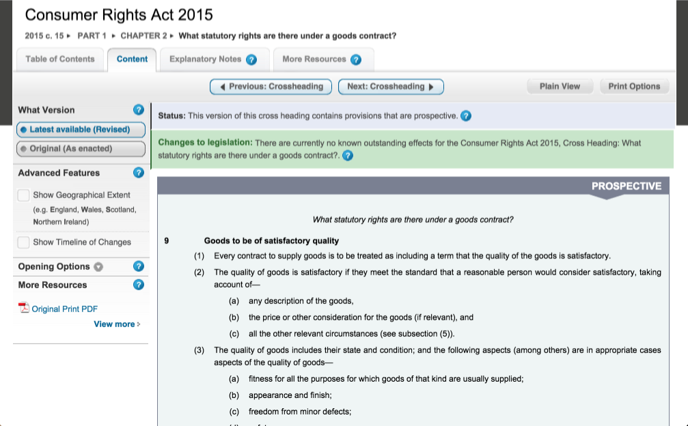
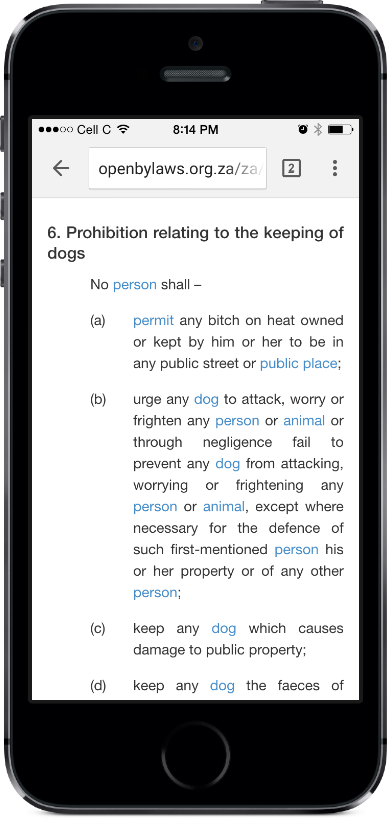
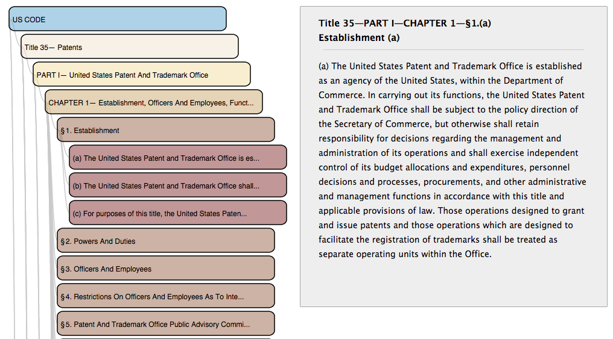

Created for AfricanLII by Code for South Africa with funding from The Indigo Trust
The Indigo Platform enables free-access-to-law through
Change this ...
into this ...
<section id="section-12">
<num>12.
<heading>Purpose and objects of environmental implementation plans and environmental management plans
<subsection id="section-12.subsection-0">
<content>
<blockList id="section-12.subsection-0.list0">
<listIntroduction> The purpose of environmental implementation and management plans is to-
<item id="section-12.subsection-0.list0.a">
<num>(a)
<blockList id="section-12.subsection-0.list0.a.list0">
<listIntroduction>co-ordinate and harmonise the environmental policies, plans, programmes and decisions of the various national departments that exercise functions that may affect the environment or are entrusted with powers and duties aimed at the achievement, promotion, and protection of a sustainable environment , and of provincial and local spheres of government, in order to-
<item id="section-12.subsection-0.list0.a.list0.i">
<num>(i)
<p>minimise the duplication of procedures and functions; and
</item>
to enable this ...
... and this ...
... and this ...
... and everything else we haven't dreamt of yet.
because it depends on the user, use-case, language, medium, context, etc.
The Indigo Platform is an
and not an end goal
Encode content, structure and metadata with
An open standard for legislation
User guide and docs at: indigo.readthedocs.org
Source code: github.com/Code4SA/indigo